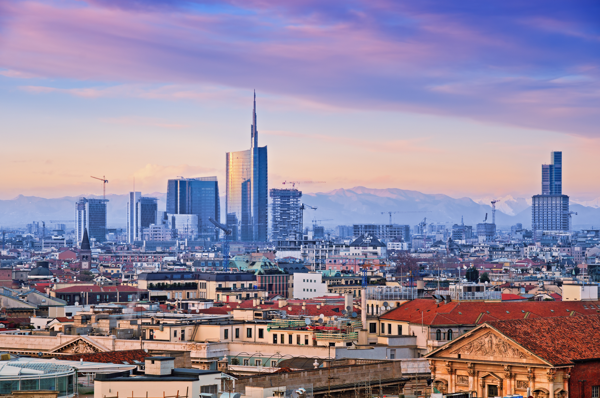
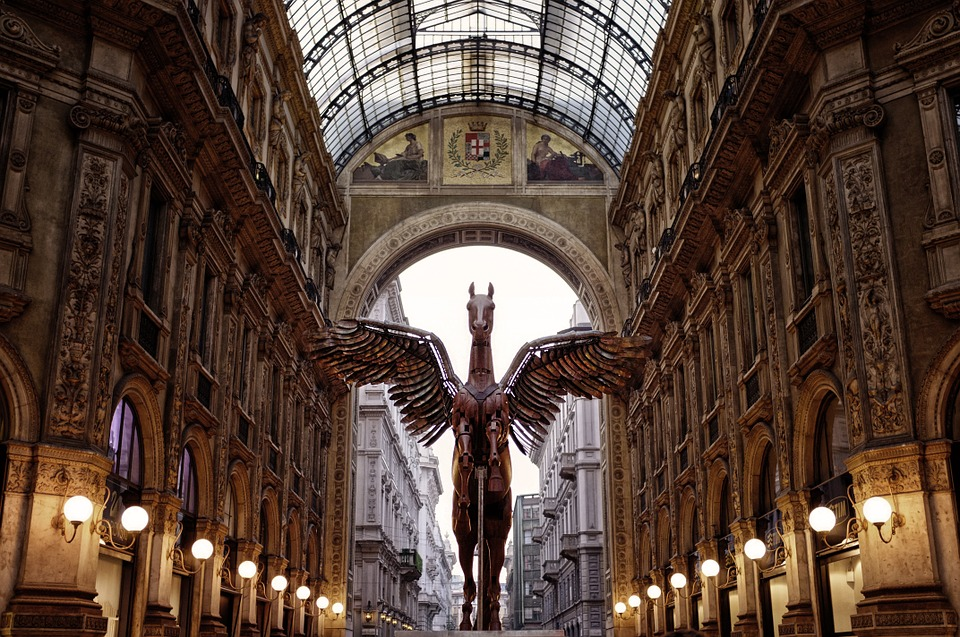

Milan, Italy
History lovers should know that Milan is not all about trendy shops and designer clothes. Among the city's many historical attractions are La Scala Opera, the Milan Cathedral, the National Museum of Science and Technology and Santa Maria della Grazie, the church that preserves da Vinci's "Last Supper".
The Duomo is a large gothic cathedral wrapped in history, art and architecture. Style is a bit over the top and clumsy, as compared to some of the greats like Chartres new Paris. Yet it has a majesty of it's own.To really appreciate the intricacies and details, you must go to the terraces. The details of the spires is impressive and helps you appreciate the impact of them. The gift shop felt too commercial and had less spiritual gifts, which I expected from prior visits to global cathedrals. Definitely worth the visit.

Galleria Vittorio Emanuele II is a wonderful place and one of Milano Highlights,near to the Duomo Cathedral, it si in the heart of the city and offers a unique possibility of a nice walk in the old center among beautiful boutiques and lovely coffe shops.
From the outside this opera house looks very bland although just a few metres from the very grand Cathedral but once inside you see the luxury, colour and brilliant architecture of this beautiful building. We took the guided tour which at Euro25 is not value for money BUT it is the only option if you cant afford the Euro3000 for a seat at the opera and no idea how much for one of the many red boxes that surround the stage!. I would have liked to have piped opera music during the tour to get an idea of the atmosphere. The red & gold of the boxes and chairs, the amazing Royal box, the marble walls of the walkways that lead you to the boxes and then the WOW back stage which is like a huge factory with a very busy back stage staff getting sets ready, it is like a bee hive of activity!!. The building was closed for several years from 2003?? for a major makeover to the back stage area to allow a major improvement in how stage sets are built and replaced for different shows, actually very impressed. Overall, if you are in Milan then it is an impressive place to visit and great if you can afford a ticket, one of our group was attending an orchestra based show that evening which is significantly cheaper and you can still enjoy the atmosphere and history